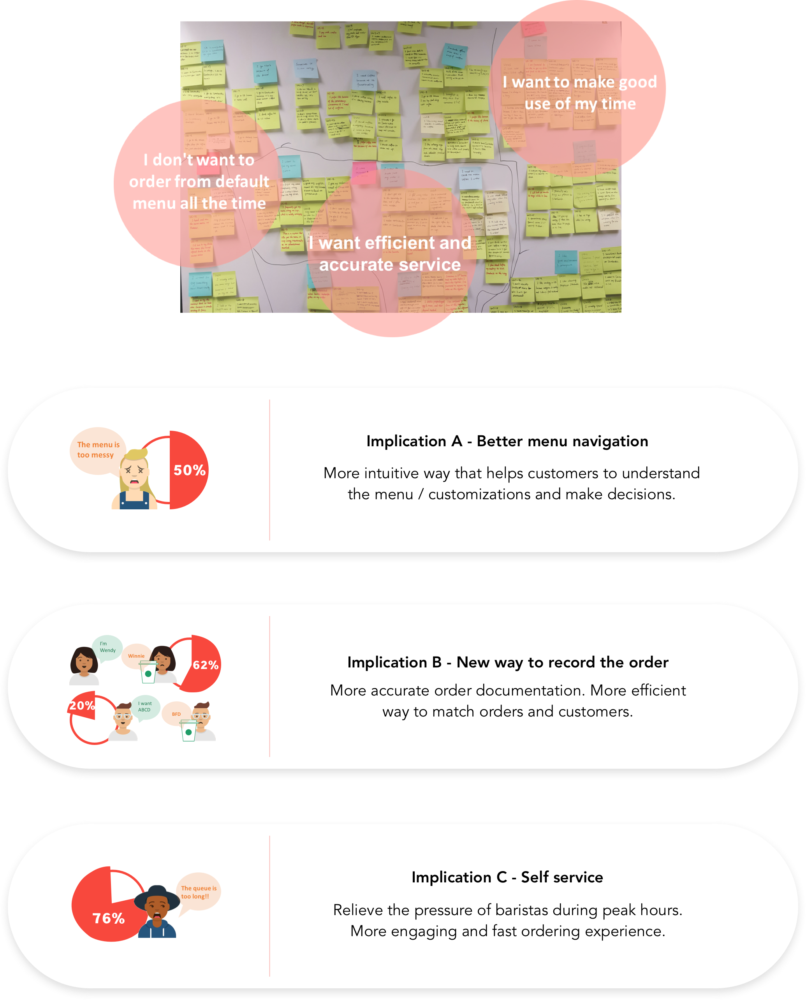
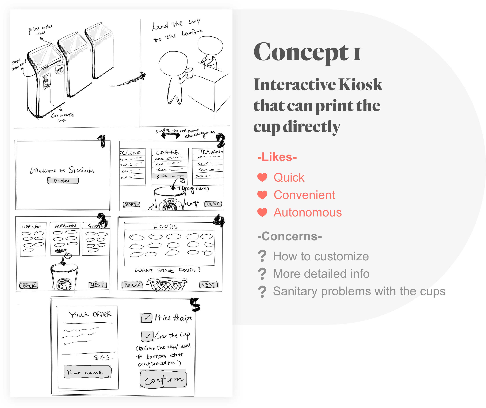
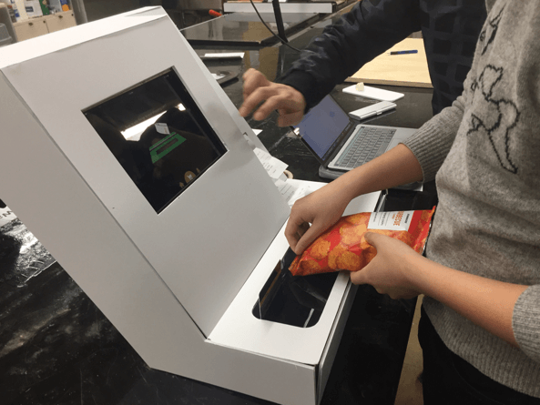

EasyOrder at Starbucks
| My Role | Lead UX & CX designer Visual Designer User testing coordinator |
|---|---|
| Team | Eclipse, 4 people |
| Tool | Figma & Sketch (Wireframe) Axure & Principle (Interaction) Physical prototype |
| Duration | Sept - Dec 2017（Refined in 2018） |
" Transforming in-store ordering experience at Starbucks "
Have you ever given up getting a cup of coffee when you saw a line without an end?
Have you ever been confused by mocha, latte，and many other technical terms?
Have you ever received a weird name from baristas and need to guess your orders?
Have you ever felt pressured to ask baristas too many questions?
Even though Starbucks mobile app is gaining its popularity, people are using it mainly for pre-order or instant payment. After spending several afternoons at Starbucks for observations and interviewing a bunch of Starbucks visitors, I noticed that in-store congestion still resulted from inefficient on-spot ordering experience.

*Customer Journey Map made by Shengxi & Hanyu
/ Design Outcome /
I. Optimized Navigation
Are you still struggeling with Starbucks terminology? With first-person statements and vivid illustrations, users can distinguish drinks and make decisions efficiently.

II. Flexible Customization
Are you dissatisfied with the default taste? Follow our customization guides or create your favorite flavors!
III. Farewell! Wrong names!
To avoid misspelled names, the kiosk read names on credit card. Or, you could roll the avatar generator to get your anonymous identity of the day. A sticker will be printed for you to match your drink!
IV. Express Tracks For Faster Purchase
Users can do self-checkout via the scanning function on the kiosks if they buy items like mugs, packaged sandwiches or bottled drinks. In the meanwhile, Starbucks members can retrieve past orders so they don't need to repetitive work. This significantly saves time for both baristas and customers!


• RESEARCH •
/ What happened "in store"/
Before we finally decided to focus on in-store experience, we did thorough research about Starbucks purchasing experience. To be specific, I was responsible for comparing the mobile app approach and traditional register experience. I interviewed both loyal Starbucks fans and occasional visitors to understand their thoughts and behavior. Together with my teammates, we did an affinity map to categorize the insights we collected. It turned out that most complaints were related to physical store experience, especially for customers who don't always use the mobile app to pre-order.
After narrowing down our scope to ordering process in the stores, we then did detailed task analysis to dissect users' action sequence based on non-intrusive observations and contextual inquiries.
/ Understanding different groups of customers /
Long waiting time during peak hours, occasional mistaken orders or names and unfamiliarity with the menu cause "congestion" in stores. However, different groups of customers have different specific needs. As a tool facing the general public, our design shall be as inclusive as possible. Based on our user research, I created a coordinate to summarize primary personas and their characteristics.
With the main customer types in mind, our team conducted a second-round affinity mapping to extract the essential universal needs of Starbucks customers. These insights then navigated us to several important design implications.

• DESIGN •
/ How we got to the solution /
Based on the conclusion we drew from previous research, we have decided that our design shall follow at least one of the following design goals:
- It shall enable more engaging and faster ordering process
- It shall help consumers, especially those unfamiliar with products, to understand the menu better
- It shall provide more convenient customization methods
- It shall help to match orders and consumers more efficiently

We were able to categorize over 30 concepts into trends and specific problems they were solving. After taking these concepts, recombining them, and comparing them against our criteria, such as price, feasibility, and ease of use, we brought ourselves down to three ideas we were prepared to make more refined sketches: a stand-alone kiosk, audio communication, and innovative representation of a name.
10 feedback sessions were organized to help us understand how users think about the designs. Most of the participants were glad to see these new options for Starbucks purchasing, though each idea had its own pros and cons. It seems that among the three ideas, audio playback was the least popular one because users care about their privacy. Also, hearing their own voices is an awkward experience.



/ Iterative Design Process /
We believed that a small series of in-store kiosks will be the most appropriate solution based on previous findings. We decided to combine the 1st and 2nd design idea to create a more detailed wireframe for the kiosk.
*Low-fidelity prototype
We had 6 participants for our low-fidelity wireframe feedback sessions. All the feedbacks were documented in a consistent way following the planned questions, based on which I iterated the design. The overall feedback was rather positive, both Starbucks addicts and occasional visitors would like to try the kiosk in the store. "I would do anything to avoid awkward communication with baristas." said one of our test participants.

*Refined work flow
• HIGHLIGHTS •
How to structure the information in a clearer way?
How to list the products?
What information do customers care about?
How much information shall appear on one screen?
How could customers view more options?
Efficient ordering procedure comes from a clear menu, from which unfamiliar customers can quickly extract useful information and make decisions. I spent a long time on figuring out how to break traditional drink menu patterns.

The third iteration receives more positive feedback during user tests. However, some people were still found the caffeine indicators confusing. Also, only coffee pages have a graphical navigation bar while the other drink types don't. I need to think about the menu layout again:
Unlike Starbucks green hands, customers who are familiar with coffee drinks, and Starbucks need more shortcuts. How our design could benefit both novice visitors and old customers simultaneously became a challenge.

During peak hours, the shop is always crowded and noisy so it is hard for baristas to get customers names correctly. Mistakes occur more frequently if the customer has a foreign name. I strived to make the order matching approach more efficient while keeping it "human".

• EVALUATION •
We conducted 3 heuristic evaluation sessions with experts and 6 usability tests with different users to evaluate our design. To make the evaluations more contextualized, we built physical prototypes to simulate real kiosk using scenarios.

Heuristic evaluation was implemented before user tests, based on which we modified some small non-task related flaws on the interface.
The usability testing allowed us to observe users’ interaction with the kiosk, quantify the quality of our design through questionnaires, and get more insights into users' feelings about the use of the kiosk through follow-up questions and interviews.
By the end of evaluation sessions, we were excited to see that all participants expressed their interests in using our kiosk if Starbucks could put it into use.

• AFTERTHOUGHTS •
Designing the interface for a kiosk is very different from the mobile app or web design, especially when Starbucks already has a sophisticated branding language system. I tried my best to make the interface and interactions as simple as possible, and to innovate without breaking existing Starbucks rules.
Also, this is the first project that I have experienced systematic usability testings along with the design process. Listening to users' voice and observing users behavior can bring benefits to design iteration, and more importantly, downsize the gap between designers and users. I began to understand the science behind user-centered design through practice: every design decision shall be made based on solid reasons instead of abstract aesthetic preferences or imagination. I am glad that my team was able to get a large amount of information from our final hybrid prototype that turned into a substantial amount of qualitative and quantitative feedback. If we had a chance to get a larger sample size of participants, we would be able to gain more quantitative data to support/doubt our design decisions.